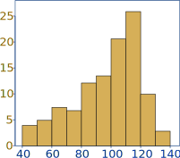
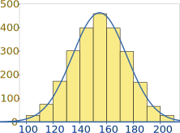
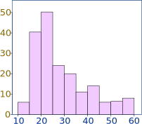
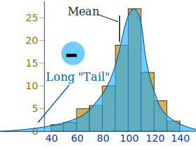
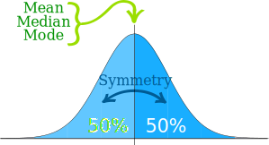
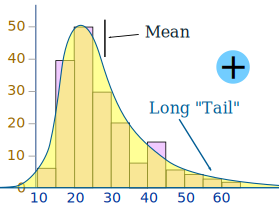

Skewed Data
Data can be "skewed", meaning it tends to have a long tail on one side or the other:
|  |  |  | ||
| Negative Skew | No Skew | Positive Skew |
Negative Skew?

Why is it called negative skew? Because the long "tail" is on the negative side of the peak.
Some people say it is "skewed to the left" (the long tail is on the left hand side)
The mean is also on the left of the peak.
The Normal Distribution has No Skew

A Normal Distribution is not skewed.
It is perfectly symmetrical.
And the Mean is exactly at the peak.
Positive Skew

And positive skew is when the long tail is on the positive side of the peak
Some people say it is "skewed to the right".
The mean is on the right of the peak value.
Example: Income Distribution

Here is some data extracted from a recent Census.
As you can see it is positively skewed ... in fact the tail continues way past $100,000
Calculating Skewness
"Skewness" (the amount of skew) can be calculated, for example you could use the SKEW() function in Excel or OpenOffice Calc.